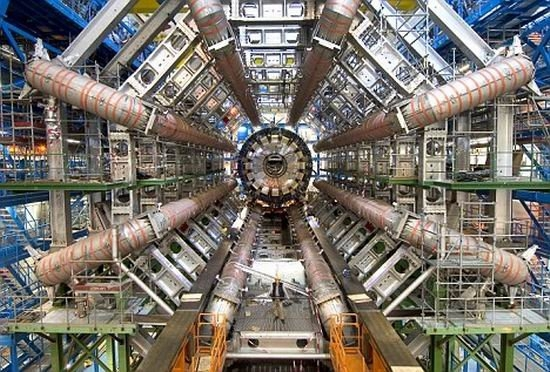

据英国《自然》（Nature）杂志2011年11月18日报道，欧洲粒子物理实验室（Europe's Particle-physics Lab，CERN）研究人员在继9月23日发布中微子（neutrinos）比光速更快的结论后，目前再次验证了该结果。
报道称，该合作实验进一步重复了9月的实验结果。首先从瑞士日内瓦附近的欧洲粒子物理实验室产生一束中微子，然后经730公里的路程到达意大利拉奎拉附近格兰萨索国家实验室（Gran Sasso National Laboratory），经测定，再次发现中微子速度比光速快了60纳秒（1纳秒等于十亿分之一秒）。
此前的9月份，很多科学家对该结论表示怀疑，一个普遍的观点是，CERN 用10.5微秒（百万分之一秒）的脉冲质子束射击来产生中微子，这个时间相对速度而言太慢，误差可能太多。
在10月份的重复实验中，CERN 仅用3纳秒（十亿分之一秒）的脉冲质子束射击来产生中微子，比前次实验脉冲时间快3000倍。并且科学家们此次重复了20次，统计结果与此前的非常一致。
实验结果再次证明，从欧洲粒子物理实验室到格兰萨索国家实验室，中微子的速度比光速快了60纳秒。

根据狭义相对论而建立的中微子标准模型，中微子的质量应为零，并应该以光速行进。
1980年代早期，科学家首次对中微子速度进行检测，当时科学家透过从脉冲质子束射击而产生的中微子，来测量中微子的速度。结果显示中微子的速度是光速与假设相符。
随着科学的发展，后来中微子的检测利用了 MINOS 检测器，测定出一个能量为 3 GeV 的中微子的速度达1.000051±0.000029倍光速。由于这个速度比光速还快，科学家当时认为实验的不确定性太大，而实际上中微子的速度应该不可能超过光速。
天文学家在观测超新星 SN 1987A 的中微子爆发时，世界各地有三台中微子检测器各自探测到5到11个微中子。检测结果显示，从超新星 SN 1987A 爆发出的中微子比可见光早到地球3小时。
由于天文学家以为中微子的速度就是光速，因此把观察到中微子比可见光早到地球3小时解释为，“中微子于超新星爆发时比可见光更早被发射出来，而不是微中子比光速快”。
相对论可能被推翻
由于据狭义相对论的建立基础是两个假说。一个是在建立中微子的标准模型时，假设中微子的质量应为零。而科学家们研究发现，中微子是有质量的。并设定了 50 MeV 的渺中子的质量上限，实验的可靠性为99%。
目前，欧洲粒子物理实验室再次验证了中微子的速度比光速快的结论。这可能将推翻爱因斯坦相对论，为人类重新认识宇宙提供了可能。
来自: blog.xmanchina.com